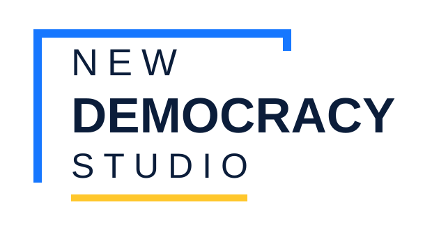
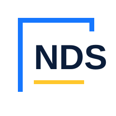

Visual identity guide · Version 1.0 · August 2026
New Democracy Studio
Practical programs that help civic organizations build capacity, strengthen influence, and renew democracy in a changing technology and information environment.
01 · Identity
Logo system
The full wordmark is the primary signature. Use the light version on white or very light backgrounds and the reversed version on New Democracy Studio Navy. Use the compact NDS mark when space is limited.


Clear space and minimum size
Keep clear space around the logo equal to the height of the letter N in NEW. Use the full logo at no less than 180 px wide digitally or 48 mm in print. Use the NDS mark at no less than 48 px digitally or 13 mm in print.
02 · Foundations
Color palette
NDS Navy
#0B1D3A
Civic Blue
#1677FF
Signal Yellow
#FFC72C
Soft Field
#F5F8FC
Ink
#182236
White
#FFFFFF
Typography
Use Georgia or Times New Roman as the serif fallback.
Use Arial, Helvetica, or the system sans serif stack for body copy, navigation, labels, and buttons.
03 · Application
Use the identity consistently
Digital patterns
Use rounded buttons for actions, generous white space, crisp yellow section rules, restrained editorial reveals, and navy panels for high-priority information.
{kind=link}
{kind=link}
{kind=link}
{kind=link}
{kind=link}
{kind=link}